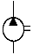

지게차운전기능사 (2004-10-10 기출문제)
1. 디젤기관과 관계없는 것은?
- 압축비가 가솔린 기관보다 높다.
- 압축 착화한다.
- 점화장치내에 배전기가 있다.
- 경유를 연료로 사용한다.
(정답률: 76%)

2. 기관 출력을 저하시키는 직접적인 원인이 아닌 것은?
- 실린더내의 압력이 낮을 때
- 클러치가 불량할 때
- 노킹이 일어날 때
- 연료 분사량이 적을 때
(정답률: 66%)
3. 엔진의 시동 전에 해야 할 가장 일반적인 점검 사항은?
- 유압계의 지침
- 에어클리너의 오염도
- 충전장치
- 엔진 오일량과 냉각수량
(정답률: 73%)
4. 운전 중 점검해야 할 사항이 아닌 것은?
- 충전상태
- 엔진 오일량
- 냉각수의 온도
- 유압유의 압력
(정답률: 44%)
5. 프라이밍 펌프는 어느 때 사용하는가?
- 연료계통의 공기배출을 할 때
- 연료의 분사압력을 측정할 때
- 출력을 증가시키고자 할 때
- 연료의 양을 가감할 때
(정답률: 59%)
6. 압축말 연료분사 노즐로부터 실린더 내로 연료를 분사하여 연소시켜 동력을 얻는 행정은?
- 폭발행정
- 압축행정
- 배기행정
- 흡기행정
(정답률: 61%)
7. 기관의 냉각장치 방식이 아닌 것은?
- 강제순환식
- 압력순환식
- 진공순환식
- 자연순환식
(정답률: 53%)
8. 냉각계통에 대한 설명 중 틀린 것은?
- 냉각수 펌프의 실(seal)에 이상이 생기면 누수의 원인이 된다.
- 실린더 물재킷에 물때가 끼면 과열의 원인이 된다.
- 팬벨트의 장력이 약하면 엔진 과열의 원인이 된다.
- 방열기속의 냉각수 온도는 아래 부분이 높다.
(정답률: 51%)
9. 엔진 윤활유에 대하여 설명한 것 중 틀린 것은?
- 인화점이 낮은 것이 좋다.
- 유막이 끊어지지 않아야 한다.
- 응고점이 낮은 것이 좋다.
- 온도에 의하여 점도가 변하지 않아야 한다.
(정답률: 64%)
10. 기관의 오일여과기의 교환 시기는?
- 윤활유 1회 교환시 1회 교환한다.
- 윤활유 3회 교환시 1회 교환한다.
- 윤활유 1회 교환시 2회 교환한다.
- 윤활유 4회 교환시 1회 교환한다.
(정답률: 62%)
11. 디젤기관 운전 중 흑색의 배기가스를 배출하는 원인으로 틀린 것은?
- 공기청정기 막힘
- 오일팬내 유량과다
- 압축불량
- 노즐불량
(정답률: 53%)
12. 시동전동기 취급시 주의사항으로 틀린 것은?
- 시동전동기의 회전속도가 규정 이하이면 오랜시간 연속회전시켜도 시동이 되지 않으므로 회전속도에 유의해야 한다.
- 기관이 시동된 상태에서 시동스위치를 켜서는 안 된다.
- 시동전동기의 연속 사용 기간은 60초 정도로 한다.
- 전선 굵기는 규정 이하의 것을 사용하면 안 된다.
(정답률: 63%)
13. 발전기의 전기자에 발생되는 전류는?
- 정전기
- 교류
- 직류
- 맥류
(정답률: 49%)
14. 다음의 조명에 관련된 용어의 설명으로 틀린 것은?
- 광도의 단위는 캔들이다.
- 피조면의 밝기는 조도이다.
- 빛의 세기는 광도이다.
- 조도의 단위는 루멘이다.
(정답률: 61%)
15. 엔진을 정지하고 전류계의 지시침을 살펴보니 정상에서 θ방향을 지시하고 있다. 그 원인이 아닌 것은?
- 전조등 스위치가 점등위치에 있다.
- 축전지 본선(main line)이 단선되어 있다.
- 배선에서 누전되고 있다.
- 시동스위치가 엔진 예열장치를 동작시키고 있다.
(정답률: 40%)
16. 충전중인 축전지에 화기를 가까이 하면 위험하다. 그 이유는?
- 충전기가 폭발될 위험이 있기 때문에
- 수소가스가 폭발성 가스이기 때문에
- 산소가스가 폭발성 가스이기 때문에
- 전해액이 폭발성 액체이기 때문에
(정답률: 51%)
17. 건설기계에 가장 많이 쓰이는 축전지는?
- 알칼리 축전지
- 니켈 카드뮴 축전지
- 아연산 축전지
- 납산 축전지
(정답률: 71%)
18. 트랙형 주행장비의 스프로킷 허브 주위에서 오일이 누설되는 원인은?
- 트랙 장력이 팽팽할 때
- 작업장이 험할 때
- 내, 외측 듀콘 씰(Duo-Cone Seal)의 파손
- 트랙 후레임의 균열
(정답률: 59%)
19. 굴삭기를 크레인으로 들어 올릴 때 틀린 것은?
- 와이어는 충분한 강도가 있어야 한다.
- 배관 등에 와이어가 닿지 않도록 한다.
- 굴삭기의 앞부분부터 들리도록 와이어를 묶는다.
- 굴삭기 중량에 맞는 크레인을 사용한다.
(정답률: 82%)
20. 화물을 적재하고 주행할 때 포크와 지면과 간격으로 가장 적당한 것은?
- 80 ∼ 85cm
- 지면에 밀착
- 50 ∼ 55cm
- 20 ∼ 30cm
(정답률: 82%)
21. 지게차의 마스트를 앞뒤로 기울이는 작동은 무엇으로 조작하는가?
- 틸트 레버
- 포크
- 리프트 레버
- 변속 레버
(정답률: 77%)
22. 다음 설명 중 틀린 것은?
- 트랙핀과 부싱을 뽑을 때에는 유압프레스를 사용한다.
- 트랙슈에는 건지형, 수중형으로 구분된다.
- 트랙은 링크, 부싱, 슈 등으로 구성되어있다.
- 트랙정렬이 안되면 링크 측면의 마모원인이 된다.
(정답률: 40%)
23. 로우더의 토사깎기 작업방법 중 잘못 된 것은?
- 로우더의 무게가 버켓과 함께 작용되도록 한다.
- 특수 상황외에는 항상 로우더가 평행되도록 한다.
- 깎이는 깊이 조정은 부움을 약간 상승시키거나 버켓을 복귀시켜서 한다.
- 버켓의 각도는 35°∼45°로 깎기 시작하는 것이 좋다.
(정답률: 37%)
24. 토크컨버터의 구성부품이 아닌 것은?
- 임펠러
- 플라이휠
- 가이드 링
- 터빈
(정답률: 48%)
25. 타이어형 굴삭기의 액슬허브에 오일을 교환하고자 한다. 옳은 것은?
- 오일을 배출시킬 때는 플러그를 6시 방향에, 주입할 때는 플러그 방향을 9시에 위치시킨다.
- 오일을 배출시킬 때는 플러그를 3시 방향에, 주입할 때는 플러그 방향을 9시에 위치시킨다.
- 오일을 배출시킬 때는 플러그를 2시 방향에, 주입할 때는 플러그 방향을 12시에 위치시킨다.
- 오일을 배출시킬 때는 플러그를 1시 방향에, 주입할 때는 플러그 방향을 9시에 위치시킨다.
(정답률: 54%)
26. 작업장에서 이동 및 선회시에 먼저 하여야 할 것은?
- 굴착 작업
- 버켓 내림
- 경적 울림
- 급방향 전환
(정답률: 55%)
27. 다음 중 건설기계의 구조 또는 장치를 변경하는 것과 관련이 없는 설명은?
- 건설기계정비업소에서 구조 또는 장치의 변경 작업을 한다.
- 관할 시·도지사에게 구조변경 승인을 받아야 한다.
- 구조변경검사를 받아야 한다.
- 구조변경검사는 주요구조를 변경 또는 개조한 날부터 10일 이내에 신청하여야 한다.
(정답률: 35%)
28. 건설기계관리법상 건설기계 조종사의 면허를 받을 수 있는 자는?
- 파산자로서 복권되지 아니한 자
- 사지의 활동이 정상적이 아닌 자
- 마약 또는 알콜 중독자
- 심신장애자
(정답률: 83%)
29. 건설기계 등록번호표 중 관용에 해당하는 것은?
- 5001 ~ 8999
- 6001 ~ 8999
- 1001 ~ 4999
- 9001 ~ 9999
(정답률: 47%)
30. 건널목을 통과할 때 일시 정지하지 않고 통과할 수 있는 경우는?
- 경보가 울리고 있을 때
- 간수가 진행 신호를 하고 있을 때
- 앞차가 건널목을 통과하고 있을 때
- 차단기가 내려지려고 할 때
(정답률: 81%)
31. 앞지르기 금지 장소가 아닌 것은?
- 교차로, 도로의 구부러진 곳
- 버스 정류장부근, 주차금지 구역
- 터널내, 앞지르기 금지표지 설치장소
- 경사로의 정상부근, 급경사로의 내리막
(정답률: 69%)
32. 그림의 교통안전표지는?
- 우로 이중 굽은 도로
- 좌우로 이중 굽은 도로
- 좌로 굽은 도로
- 회전형 교차로
(정답률: 71%)
33. 차도에서 자동차 이외 제차의 통행방법은?
- 보도의 좌측 통행
- 좌.우측 모두 통행
- 중앙선 우측 차로 통행
- 중앙선 좌측 차로 통행
(정답률: 64%)
34. 운전면허 취소 처분에 해당되는 것은?
- 과속운전
- 중앙선 침범
- 면허정지 기간에 운전한 경우
- 신호위반
(정답률: 85%)
35. 작동유의 열화를 판정하는 방법으로 적절하지 않는 것은?
- 오일을 가열 후 냉각되는 시간확인
- 점도 상태로 확인
- 색깔이나 침전물의 유무 확인
- 냄새로 확인
(정답률: 40%)
36. 그림의 유압 기호는 무엇을 표시하는가?

- 오일쿨러
- 유압탱크
- 유압펌프
- 유압모터
(정답률: 59%)
37. 압력제어 밸브는 어느 위치에서 작동하는가?
- 실린더 내부
- 펌프와 방향전환 밸브
- 탱크와 펌프
- 방향전환 밸브와 실린더
(정답률: 50%)
38. 밀폐된 용기내의 액체 일부에 가해진 압력은 어떻게 전달되는가?
- 유체의 압력이 돌출 부분에서 더 세게 작용된다.
- 유체 각 부분에 다르게 전달된다.
- 유체의 압력이 홈부분에서 더 세게 작용된다.
- 유체 각 부분에 동시에 같은 크기로 전달된다.
(정답률: 66%)
39. 베인 펌프의 특징 중 맞지 않은 것은?
- 수명이 짧다.
- 맥동과 소음이 적다.
- 간단하고 성능이 좋다.
- 소형, 경량이다.
(정답률: 55%)
40. 액츄에이터의 운동속도를 조정하기 위하여 사용되는 밸브는?
- 방향제어 밸브
- 온도제어 밸브
- 유량제어 밸브
- 압력제어 밸브
(정답률: 59%)
41. 유압장치 내에 국부적인 높은 압력과 소음·진동이 발생하는 현상은?
- 캐비테이션
- 채터링
- 오버 랩
- 하이드로 록킹
(정답률: 51%)
42. 오일펌프에서 나온 오일은 오일 여과기를 거쳐 윤활부로 가는데 이 여과기는?
- 분류식 여과기
- 샨트식 여과기
- 반전류식 여과기
- 전류식 여과기
(정답률: 37%)
43. 유압유에 점도가 다른 오일을 혼합 하였을 경우 나타날 수 있는 현상은?
- 오일 첨가제의 좋은 부분만 작동 하므로 오히려 더욱 좋다.
- 점도가 달라지나 사용에는 전혀 지장이 없다.
- 혼합하여도 전혀 지장이 없다.
- 열화 현상을 촉진 시킨다.
(정답률: 80%)
44. 유압탱크의 구비 조건이 아닌 것은?
- 적당한 크기의 주유구 및 스트레이너를 설치한다.
- 드레인(배출밸브) 및 유면계를 설치한다.
- 오일에 이물질이 혼입되지 않도록 밀폐 되어야 한다.
- 오일 냉각을 위한 쿨러를 설치한다.
(정답률: 58%)
45. 유압 회로의 최고 압력을 제한하고 회로내의 과부하를 방지하는 밸브는?
- 안전 밸브(릴리프 밸브)
- 감압 밸브 (리듀싱 밸브)
- 순차 밸브 (시퀀스 밸브)
- 무부하 밸브 (언로딩 밸브)
(정답률: 59%)
46. 펌프에서 흐름(flow, 유량)에 대해 저항(제한)이 생기면?
- 펌프 회전수의 증가 원인이 된다.
- 압력 형성의 원인이 된다.
- 밸브 작동 속도의 증가 원인이 된다.
- 오일 흐름의 증가 원인이 된다.
(정답률: 50%)
47. 안전표지 중 안내 표지의 바탕색으로 맞는 것은?
- 흑색
- 녹색
- 적색
- 백색
(정답률: 67%)
48. 다음 중 안전사항과 가장 거리가 먼 것은?
- 소음 상태 점검
- 운전중에 트랙장력 측정
- 힘이 작용하는 부분의 손상 유무
- 볼트, 너트 풀림 상태를 육안 또는 운전 중 감각으로 확인
(정답률: 43%)
49. 용접 작업시 유해 광선으로 눈에 이상이 생겼을 때 응급처치 요령으로 적당한 것은?
- 안약을 넣고 안대를 한다.
- 온수 찜질 후 치료한다.
- 냉수로 씻어낸 다음 치료한다.
- 바람을 마주보고 눈을 깜박거린다.
(정답률: 69%)
50. 다음 그림의 안전표지판이 나타내는 것은?
- 비상구
- 출입금지
- 인화성 물질 경고
- 보안경 착용
(정답률: 88%)
51. 안전보호구 선택시 유의사항으로 틀린 것은?
- 보호구 검정에 합격하고 보호성능이 보장될 것
- 착용이 용이하고 크기 등 사용자에게 편리할 것
- 작업 행동에 방해되지 않을 것
- 반드시 강철으로 제작되어 안전 보장형일 것
(정답률: 84%)
52. 축전지를 충전할 때 주의사항으로 맞지 않는 것은?
- 충전시 전해액 주입구 마개는 모두 닫는다.
- 축전지는 사용하지 않아도 1개월 1회 보충전을 한다.
- 축전지가 단락하여 불꽃이 발생하지 않게 한다.
- 과충전 하지 않는다.
(정답률: 46%)
53. 작업개시 전 운전자의 조치사항으로 가장 거리가 먼 것은?
- 점검에 필요한 점검내용을 숙지한다.
- 운전하는 장비의 사양을 숙지 및 고장나기 쉬운 곳을 파악하여야 한다.
- 장비의 이상 유무를 작업 전에 항상 점검하여야 한다.
- 주행로 상에 복수의 장비가 있을 때는 충돌방지를 위하여 주행로 양측에 콘크리트 옹벽을 친다.
(정답률: 87%)
54. 지게차의 적재화물이 크고 현저하게 시계를 방해할 때 운전자의 운전방법으로 틀린 것은?
- 후진으로 주행한다.
- 필요시 경적을 울리면서 서행을 한다.
- 적재물을 높이 들고 주행한다.
- 유도자를 붙여 차를 유도한다.
(정답률: 74%)
55. 운전자가 작업개시 전 점검해야 할 사항으로 가장 거리가 먼 것은?
- 점검표기에 따라 점검한다.
- 이상 부위 발견 시 운전자는 즉시 정비한다.
- 장비의 구조와 개요, 기능을 숙지한다.
- 장비의 이상 유무를 항상 점검한다.
(정답률: 52%)
56. 해머 사용 중 사용법이 틀린 것은?
- 타격면이 닳아 경사진 것은 사용하지 않는다.
- 장갑이나 기름 묻은 손으로 자루를 잡지 않는다.
- 담금질 한 것은 단단하므로 한 번에 정확히 타격한다.
- 물건에 해머를 대고 몸의 위치를 정한다.
(정답률: 79%)
57. 도시가스 배관 주위에서 굴착장비 등으로 작업할 때 준수사항으로 적합한 것은?
- 가스배관 주위 30㎝ 까지는 장비로 작업이 가능하다.
- 가스배관 좌우 1 m 이내 에서는 장비작업을 금하고 인력으로 작업해야 한다.
- 가스배관 주위 50㎝ 까지는 사람이 직접 확인할 경우 굴삭기 등으로 작업할 수 있다.
- 가스배관 2m 이내에서는 어떤 장비의 작업도 금한다.
(정답률: 58%)
58. 도시가스사업법에서 고압이라 함은 압축가스일 경우 1제곱센티미터 당 몇 킬로그램 이상의 압력을 말하는가?
- 10
- 5
- 1
- 100
(정답률: 54%)
59. 차도에서 전력케이블은 지표면 아래 약 몇 m의 깊이에 매설되어 있는가?
- 0.5 ∼ 0.8
- 2 ∼ 3
- 0.3 ∼ 0.5
- 1.2 ∼ 1.5
(정답률: 63%)
60. 전선을 철탑의 완금(Arm)에 기계적으로 고정시키고, 전기적으로 절연하기 위해서 사용하는 것을 무엇이라고 하는가?
- 완철
- 가공지선
- 애자
- 클램프
(정답률: 60%)